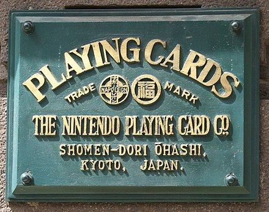

Créée le 23 septembre 1889, Nintendo se nomme d’abord Nintendo Koppaï. Il ne s'agit que d’une petite entreprise artisanale que Fusajiro Yamauchi a créée pour vendre des cartes à jouer, les hanafuda, qu’il avait fabriquées lui-même. Ses cartes deviennent très populaires, à tel point que Yamauchi doit s'entourer d'assistants pour pouvoir aller vers une production plus massive de cartes et ainsi satisfaire la demande. Mais c'est en 1902 qu'il commence à fabriquer les premières cartes à l'occidentale au Japon. En 1907, Fusajirō agrandit sa société en exportant ses cartes à l'étranger. Fusajiro prendra sa retraite en 1929 et cédera sa place à son gendre, Sekiryo Yamauchi (originellement Sekiryo Kaneda, il adopte le nom de Yamauchi à la suite de la demande de Fusajiro). La société est rebaptisée Yamauchi Nintendo & Co. en 1933. En 1947, Sekiryo crée une nouvelle société, Marufuku Co. Ltd (rebaptisée Nintendo Karuta Co. Ltd. en 1951) dans le but de distribuer les Hanafudas à l’étranger. Il faudra attendre 1949 et l’arrivée du jeune Hiroshi Yamauchi, le petit-fils de Sekiryo Yamauchi (et qui sera président de Nintendo jusqu’en 2002), pour voir les activités de la société se diversifier concrètement. Par exemple, on l’a vu se développer dans le marché des portions de riz individuelles, la gestion de compagnies de taxis et même propriétaire d’une chaîne de Love Hotels, activités anecdotiques. En 1951, il change le nom de la société pour Nintendo Playing Cards Co. Ltd. En 1953, Nintendo commence à avoir un immense succès dans la fabrication des premières cartes en plastique du Japon. En 1956, Hiroshi Yamauchi, arrière-petit-fils de Fusajiro Yamauchi, visite les États-Unis pour discuter avec la United States Playing Card Company, le principal fabricant de cartes à jouer. Il a découvert que la plus grande entreprise de cartes à jouer au monde n'utilisait qu'un petit bureau. La prise de conscience de Yamauchi que le commerce de cartes à jouer avait un potentiel limité était un tournant. Il a ensuite acquis la licence pour utiliser les personnages de Disney sur les cartes à jouer pour stimuler les ventes. C'est grâce à un contrat signé avec Disney en 1959 que la société prend une envergure internationale. Nintendo entre en bourse en 1962, sous le nom de Nintendo Co. Ltd. En 1965, Nintendo a embauché Gunpei Yokoi en tant qu'ingénieur de maintenance pour la chaîne de montage. Cependant, Yokoi est rapidement devenu célèbre pour beaucoup plus que sa capacité à réparer les bandes transporteuses. En 1969 est créé le département Games dirigé par Gunpei Yokoi. Le premier jouet de ce dernier se nomme Ultra Hand et se vendra à 1,2 million d’exemplaires. Par la suite, Nintendo lancera d’autres jouets avec plus ou moins de succès comme Ultra Machine ou Love Tester. De nos jours, Nintendo continue de commercialiser des cartes à jouer. La firme organise en parallèle de ses activités son propre tournoi de bridge, la Nintendo Cup
C’est au début des années 1970 que Nintendo se tourne vers le marché naissant des jeux vidéo, en créant des jeux pour les bornes d’arcades. En 1970 est mise en vente des Beam Gun Games, ayant recours à l'optoélectronique. Pour la première fois au Japon, de la technologie électronique s'installait dans l'industrie du jouet. En 1971, Nintendo lance (uniquement au Japon) une photocopieuse simple nommée NCM Copillus. Elle deviendra un produit à succès avec plus de 100 000 unités vendues. Nintendo collabore avec Magnavox à la création de l'Odyssey, la première console de salon multi-jeux de l'histoire (1972).
C'est le début de Nintendo tel que nous le connaissons aujourd'hui
